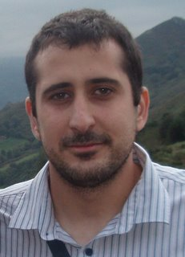

Página Personal de Óscar Quevedo Teruel
- 
-
Óscar
Quevedo Teruel
- Ingeniero de Telecomunicación por la Universidad Carlos III de Madrid
-
Departamento de Teoría de la Señal y Comunicaciones
(Universidad Carlos III de Madrid)
-
Avda. Universidad 30,
28911
Leganés (Madrid)
- Laboratorio:
- 4.2.E01
- Teléfono:
- +34 916246214
Actividad docente
- Laboratorio de Comunicaciones Ópticas
- 5º Ingeniería de Telecomunicación
-
Cursos
- 2005/2006
- 2006/2007
- 2007/2008
- 2008/2009
- Electroacústica
- 2º Ingeniería Técnica de Telecomunicación: Sonido e Imagen
-
Cursos
- 2005/2006
- 2006/2007
- 2007/2008
- 2008/2009
Actividad investigadora